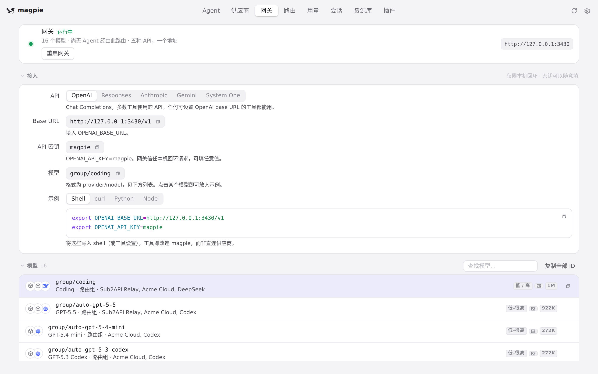
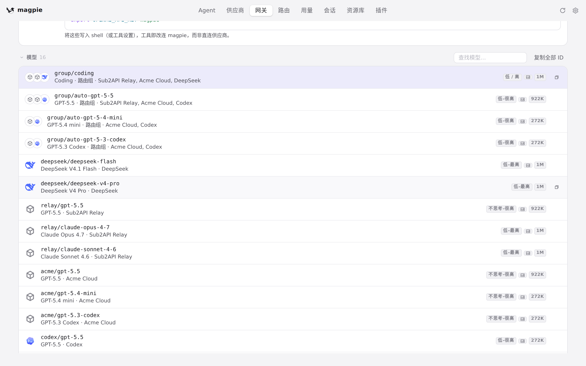
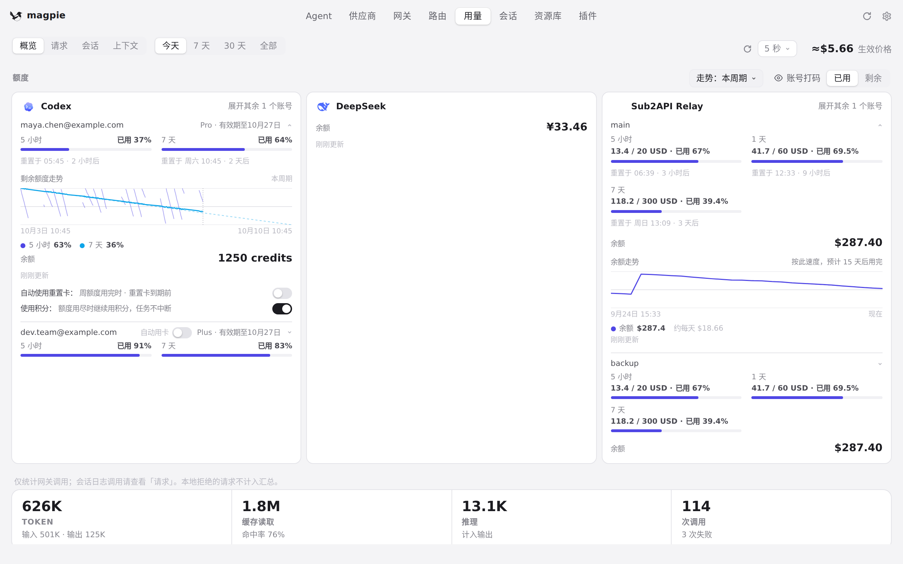
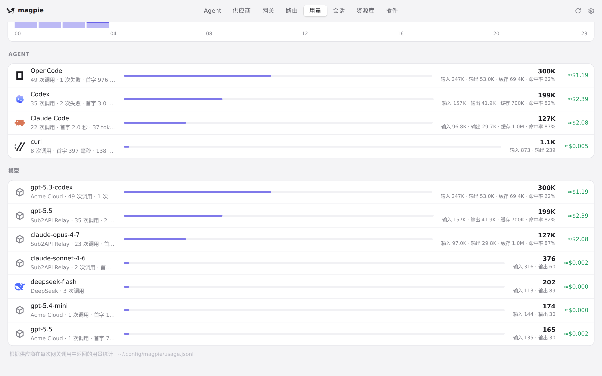

#1213 界面预览
commit 094c1a7 · 回到 PR · 只改了 app.js 里页面滚动的归属判断：在页面右侧滚动条带内按下鼠标时把整段拖动记作读者自己滚动，松手后再续 250ms 读者窗口，并在拖动期间跳过点击后的「保持」、pinSizes 回拉和 Routing 页的占位保持。页面的外观、文案和布局都没有变化。
红线是鼠标走过的轨迹，红色圆环是一次点击；底部文字是这一步在做什么。空格暂停，← → 逐段查看。

网关页：页面自身的滚动位置 · 网关页顶部：模型列表从 group/coding 开始

网关页：页面自身的滚动位置 · 滚动之后：页面停在列表下方的 deepseek/deepseek-v4-pro 附近

用量页：滚动到底部的内容 · 用量页顶部：额度卡片在屏幕内

用量页：滚动到底部的内容 · 滚动之后：页面停在模型统计列表处